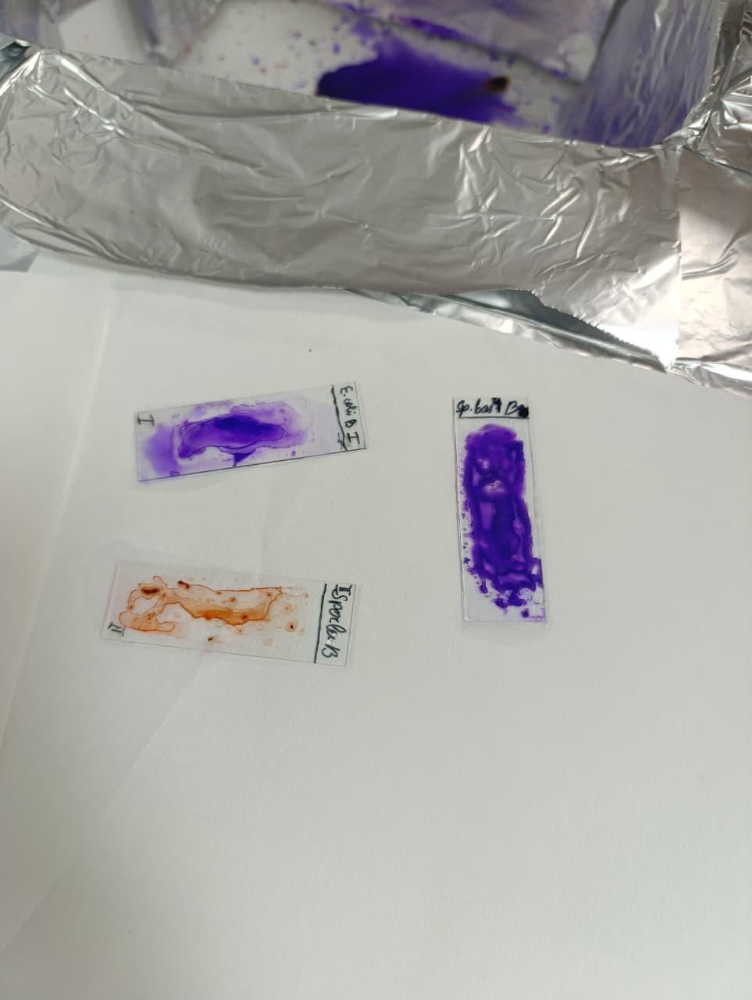
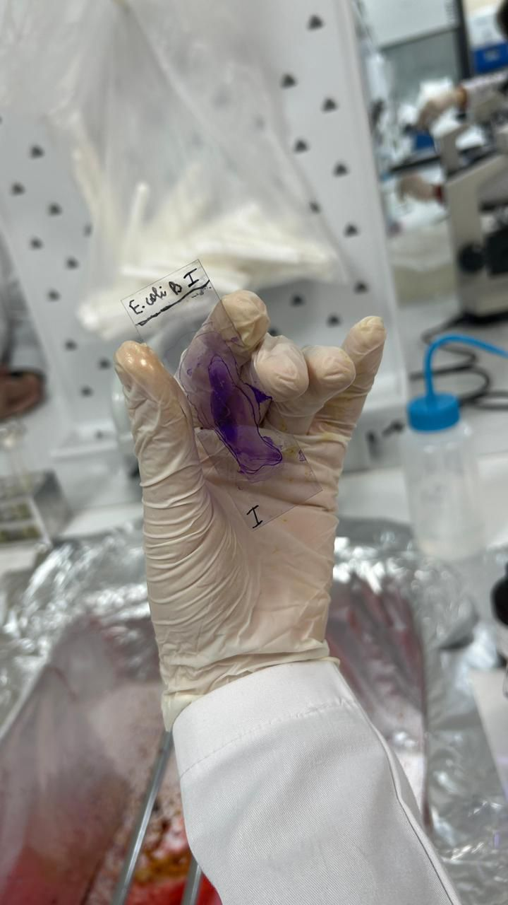
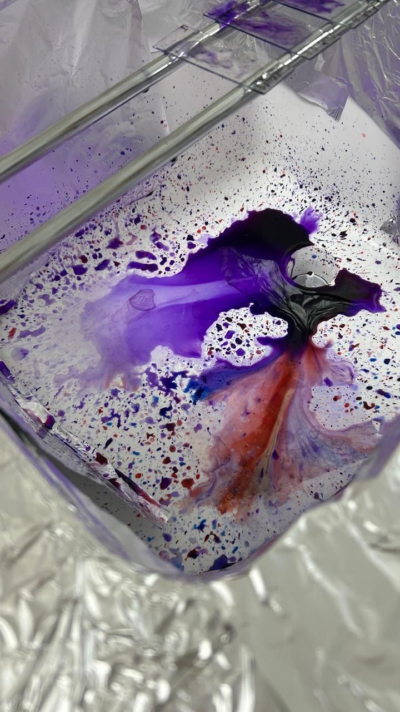
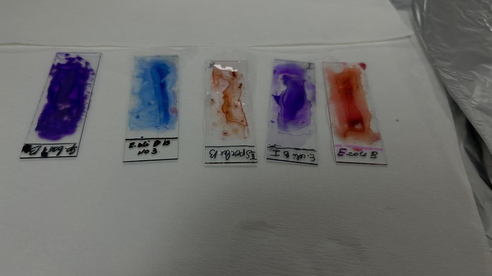

Bakteriyaların Təsnifatı: Qram Boyama Metodu
Mikrobiologiyanın ən təməl diaqnostik üsullarından biri olan Qram boyama, bakteriyaların hüceyrə divarı strukturuna görə fərqləndirilməsinə imkan verir. Bu təcrübədə Kristal Violet və Safranin boyalarından istifadə edərək bakterial kulturaların identifikasiyası prosesi həyata keçirilmişdir.
Metodologiya və Mərhələlər
Qram boyama dörd əsas mərhələdən ibarətdir: birincili boyama (Kristal violet), mordanın tətbiqi (Lüqol), rəngsizləşdirmə (spirt) və əks-boyama (Safranin). Təcrübə zamanı E. coli və digər bakteriya nümunələri steril şəraitdə slaydlara çəkilərək fiksasiya edilmişdir.




Hazırlanmış bakterial yaxmalar — boyanma sonrası mikroskopik müayinəyə hazır vəziyyətdə
Differensial Boyanma Mexanizmi
Bakteriyaların fərqli rəng alması onların peptidoqlikan qatının qalınlığından asılıdır. Qram-müsbət bakteriyalar bənövşəyi rəngi saxlayır, Qram-mənfi bakteriyalar (məsələn, E. coli) isə spirtlə yuyulduqda rəngsizləşir və Safranin ilə çəhrayı/qırmızı çalarlar alır.
Qida Mühəndisliyində Əhəmiyyəti
Bu metod qida mikrobiologiyasında patogenlərin sürətli təyini üçün kritikdir. Məsələn, süd və ət məhsullarında rast gəlinən çirklənmələrin hansı qrup bakteriyalara aid olduğunu bilmək, tətbiq olunacaq dezinfeksiya metodunun seçilməsinə kömək edir.
Təcrübə zamanı əldə olunan nəticələr bakterial morfologiyanın və hüceyrə divarı tipinin dəqiq analizini təmin etmişdir.
Təcrübənin Yekun Nəticələri
- ✅ Bakterial yaxmalar standarta uyğun fiksasiya olunmuşdur
- ✅ Kristal Violet və Safranin kontrastı uğurla təmin edilmişdir
- ✅ Qram-mənfi (çəhrayı) və Qram-müsbət (bənövşəyi) fərqi vizuallaşdırılmışdır
- ✅ Nümunələrin identifikasiyası mikrobioloji normalara uyğundur